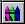

You can use color in two ways:
Adding foreground, background, or edge color to a selected object
Adding color to more than one object

To add color to a selected object, select the object, right-click,
select
Color, and then select
Foreground,
Background, or
Edge. Once you select a color, click
OK, and then close the dialog. To add color to
multiple objects, select the
Color button on the
Toolbox. The
Color dialog stays on your screen as you select
colors. For the procedures in this book, we will use the first method.
The
Color Selection dialog contains two tabs you can use
to choose a color from a palette or from a list of names. You choose a color by
clicking it on the palette or by selecting it from the list.
Default colors appear in the
Shape Preferences tab of the
User Preferences dialog. To change the default
colors, click
,
click the color box that you want to change (Foreground,
Background, or
Edge), and then select the new default color from
the palette.
Note:
Changes to the default colors do not change the colors
of objects that are already in the picture.
Tip:
To change the background color of the entire picture,
click
,
click the
Background Color box, and select a background
color from the palette that appears. Click
OK to return to the picture and display the new
background color.